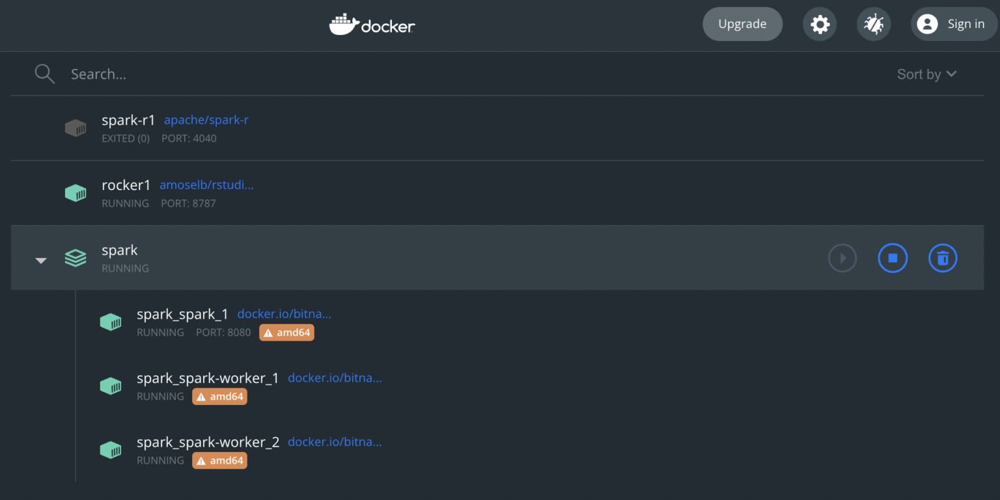

Intro
Most RDBMS’s are just fine. Hadoop does work for Big Data (I used it some years back), although HQL proved a bit slow… And I haven’t “needed” anything to make things faster for now…
But for whatever reason, one can’t be “into data science” (or data analysis, or whatever you name it…), without knowing (a bit) about Apache Spark, nowadays. (Spark is not a DBMS, I know…)
And just in case I end up needing interacting with it, I should get acquainted a bit more (I only understand some rudimentary concepts so far).
So I decided to try and set up a Spark Cluster (“standalone” for now), in Docker (of course), to then try to connect to it with R (of course).
Here is the first story about that.
Choosing the right setup
So to get a Spark Cluster ready to work, one needs at least a Master Node and a Worker. That’s at least 2 containers right there, which means we probably want to go the way of the Docker Compose (instead of manually doing it all separately).
In looking for a simple alternative (I am more interested in the interacting with Spark than in the setting it up, for now), I came across the Bitnami installation, here.
Is it the best one for me right now? As it turns out we will (soon) see that “not really”, but I hope it will still be good enough though.
Before we get it running, one thing that will be needed though is for me to modify the docker-compose.yml file for the new containers to use the same network as my RStudio Server container (otherwise, I won’t be able to have all the pieces seeing each other…). To achieve that, as I already have a Bridge Network in my Docker setup, I add that “external” network to the docker-compose YAML file like so:

...
networks:
default:
name: r_analysis_br0
external: trueAnd then I’d hope I can get those up and running. For the fun of it, let’s try to get the Spark Standalone cluster to run one master and two workers:
$ docker-compose up --scale spark-worker=2
It seems like we got it!
Now about the “issue”. In previous tests this morning, using the official Apache images, I got a container that was fully optimized to run on the Macbook with M1 (i.e. ARM arch).

Unfortunately, the Bitnami copy apparently only has been taken for AMD64, which is not optimal:

Well, so we’ll have a “non-optimal” setup for now. I shall look into improving that in the future, but if this is working, I’m still quite happy with it.
Connecting to the cluster from R
Alright so one more step: We got our Spark Cluster running, but now we need to get our RStudio to connect to that Spark Master node.
To get started, we’ll need to install the “sparklyr” package.

Next, let’s get our RStudio container to participate of the Spark cluster.
For whatever reason, connecting from my R session to download the software tar file is not working, but I can wget my way around it in the container’s console:
wget https://dlcdn.apache.org/spark/spark-3.3.0/spark-3.3.0-bin-hadoop2.tgz
Then from the R session:
library(sparklyr)
spark_install_tar("/home/rstudio/spark-3.3.0-bin-hadoop2.tgz")That seems to work (it only takes a second).
Finally, we should be ready to connect to the Spark Cluster. Taking the URL from the Master Node page (on port 8080):
sc <- spark_connect(spark_home=spark_install_find(version="3.3.0")$sparkVersionDir, master = "spark://spark:7077")And yes, apparently, we’re here! At least, that’s what RStudio is saying:

First Spark command test from R
Finally we’re here. Let’s try to run something in there.
Note: Restarted the cluster with only one worker, as the setup with two workers wouldn’t work as expected, killing my R application after only a few seconds. I’m sure I’ve done something wrong, but I just don’t really know what… No matter, with only one node, that works fine. To get there, I just restarted the cluster:
$ docker-compose down
$ docker-compose upAs by default, it starts with only one worker 🙂
OK, so let’s get started. After restarting the whole setup (including the RStudio container), things finally work as expected:
> library(sparklyr)
> sc <- spark_connect(spark_home=spark_install_find(version="3.3.0")$sparkVersionDir, master = "spark://spark:7077")
> sc$master
[1] "spark://spark:7077"
> temp_df <- data.frame(a=1:25, b=letters[1:25])
> test <- copy_to(sc, temp_df, "tempdfspark")And there we are: We are writing to a Spark cluster.

Conclusions
Today we managed to:
Install a Spark Standalone cluster in Docker containers, using and modifying a Docker Compose YAML file
Install the required components into our RStudio Server Container, so that we could connect to that new cluster
Load data into the cluster from an R session.
As a side note, one should disconnect from the Cluster after using it. Doing that is quite easy using:
spark_disconnect(sc)But then if I reconnect, I won’t see the data I uploaded just before. From what I’m gathering that’s normal because each connection is treated as an independent application…
I shall look into using some persistent data thing to put behind the Spark processing middleware, to use data across different sessions, and see what else can be done with this Spark cluster… At some later point.
References
Fastest alternative I could finde to setup Spark Cluster in Docker
Clarified needing to point to the spark local install home to connect